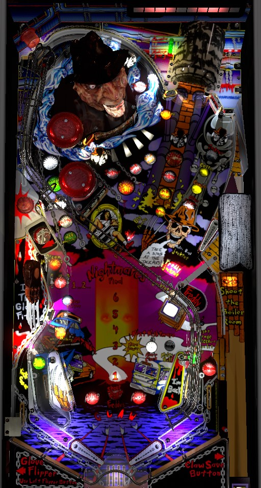

Nightmare modes are started by shooting the Boiler Room in the upper right, or by going a long time without hitting a right captive ball or upper right standup target that is lit for Coffee. In Nightmares, shoot the 5 shots lit with Freddy's face, then shoot the Boiler Room to complete the mode. The DMD will also list other table features that have increased value during Nightmares. To make Nightmares easier, hit Coffee targets until you are Fully Awake, then shoot the captive ball to earn Items. Loop shots around Freddy's head earn Kruegerands; cash these in with a right in lane -> left orbit combo to earn additional multiballs, extra balls, or Dream Warriors wizard mode.
The skill shot on Freddy is a timed plunge that goes into the Boiler Room when the moving wall in front of it is down, which instantly starts the next Nightmare mode.
"Awake" is the standard single-ball mode of play. Awakeness is shown by a meter of five vertical lights just left of the Boiler Room; the further up the meter is, the more Awake you are, The light will move down the meter toward being Asleep on its own every few seconds. To move the light back up the meter, hit the upper right standup target (just left of the Boiler Room) or the right captive ball when they are lit for Coffee. If the light is at the top of the Awake meter, you are considered to be Fully Awake. Shooting the Boiler Room when it is lit for Fall Asleep will instantly take you to Asleep mode and start the next Nightmare, no matter how Awake you currently are. The 1...2... Mystery award at the lower left can award Fully Awake or Fall Asleep as possible awards. When you are very close to falling Asleep, the game's background music will slow down to simulate getting drowsy.
When you are Fully Awake, two awards are available:
At any time while you are Awake, complete a set of the drop targets to earn either More Power or Alarm Clock for the next Nightmare mode. The exact award received for completing the drop targets is shown in front of the drops themselves. If neither More Power nor Alarm Clock have been earned, bumpers and slingshots will alternate which one is collected by completing the current set of drop targets. If both More Power and Alarm Clock have been earned, the drop targets are lit for Big Points, which scores 10,000,000 points. The Multi Ball item cannot be earned from the drop targets: it is given for free before Nightmares 1, 3, 5, and Final, and must be earned from Freddy's Bones otherwise.
Falling Asleep instantly starts the next Nightmare mode. To fall Asleep, shoot the Boiler Room when it is lit for Fall Asleep (or as part of a skill shot), or play in Awake mode for a while without hitting a Coffee target to cause the light on the Awake meter to fall to the bottom. If the Boiler Room is not lit for Fall Asleep, hitting the wall in front of the Boiler Room will light it.
In the first 6 Nightmare modes, the goal is to hit shots around the playfield lit with Freddy's face until the red horizontal meter at the back of the game is completely filled. The earlier you are in the game, the more of this meter is lit for you when the Nightmare starts. The shots lit for Freddy are the left orbit, the extra ball target, the center loop, the Boiler Room, and the captive ball. Making any of these shots during a Nightmare adds 2 lights to the red meter (or 3 if you earned the More Power item before starting the current Nightmare). Once the meter is completely filled, shoot the Boiler Room to "Grab Freddy" and complete the Nightmare, which scores 10,000,000 points times the current Nightmare number and adds 10,000,000 points to the completion award for Final Nightmare.
Nightmares 1, 3, and 5 are always Multiball Nightmares. These Nightmares end when single ball play resumes, and there is very little ball save at the start of these Nightmares. Multiball Nightmares start with 2 balls in play; the lower left standup target will start lit during Multiball Nightmares, and hitting this target will cause a "friend to join the Nightmare", which adds a ball to the playfield. This add-a-ball can only be used 2 times per Multiball Nightmare. If you are able to grab Freddy and complete a Multiball Nightmare with more than one ball in play, the Multiball Jackpots will be qualified. Jackpots start lit at the 5 Freddy shots- left orbit, extra ball target, center loop, Boiler Room, and captive ball. Making a shot lit for Jackpot unlights it. The first Jackpot scores 10,000,000 points, with successive Jackpots each scoring 10,000,000 more than the last, up to 50,000,000 points. After all 5 Jackpots have been collected, the right captive ball will remain lit for a repeatable 50,000,000 point jackpot for the rest of multiball. You cannot start another Nightmare or activate any Awake features until multiball ends.
Nightmares 2, 4, and 6 start out as single-ball Nightmares, though they can be upgraded to Multiball Nightmares by collecting a Freddy's Bones award during Awake phase before starting the Nightmare. Nightmares that are started as single-ball Nightmares are timed to 20 long seconds (it's really closer to 30 real-life seconds). Single-ball Nightmares end when time runs out or when Freddy is grabbed; there is no additional round of Jackpots like there is in Multiball Nightmares. Draining during a single-ball Nightmare ends the Nightmare.
If you earned an Alarm Clock item before starting a Nightmare, you have one saving grace to make the Nightmare easier. With an Alarm Clock, there is a timer of 5 long seconds (about 8-10 real seconds) where you can shoot the Boiler Room, and if you do, the rules of the current Nightmare will continue into the Awake phase of the game, allowing you to continue to work on Freddy shots and potentially Grab Freddy himself until the ball drains or until you fall Asleep again. The Alarm Clock countdown activates when a Multiball Nightmare is reduced to single-ball play or when the 20-second mode timer of a single-ball Nightmare runs out; the Alarm Clock phase is skipped if you Grabbed Freddy and completed the Nightmare before losing multiball or running out of time.
Nightmares 2 through 6 also each have additional features that are only active while the Nightmare is running. The DMD will tell you to prioritize these features, even though the main goal of a Nightmare is always to shoot Freddy shots until you can grab Freddy at the Boiler Room.
After playing all 6 Nightmares, the next transition to Asleep phase will start Final Nightmare. Final Nightmare always begins as a 4-ball multiball, and does not instantly end when single-ball play resumes. At the start of Final Nightmare, all 5 Freddy shots will flash. Making a flashing shot unlights it. Making all 5 flashing shots will cause the Boiler Room to start flashing; making the Boiler Room at this phase scores the Final Nightmare Jackpot, which is equal to 1,000,000 points for each Soul saved in the game so far, plus 1,000,000 points for each Kruegerand you currently have on hand, plus 10,000,000 points for each time you Grabbed Freddy in the game to this point. If you score the Final Nightmare Jackpot with multiple balls still in play, the Multiball Jackpot phase will begin just the same as any other Multiball Nightmare. When Final Nightmare's multiball ends, your Nightmare progress is reset, and you'll be taken back to Nightmare 1- but for the second time through, you aren't spotted anything on the red meter when a Nightmare starts, and you will always need to collect all 10 lights yourself to qualify the opportunity to complete the Nightmare.
Kruegerands are an in-game currency that is awarded in various ways. Making a left orbit or center loop shot during single-ball play or during Hidden Mode is worth 3 Kruegerands. Collecting a Freddy's Bones captive ball award when you already have all 3 Items is worth 10 Kruegerands. Shooting the wall in front of the Boiler Room during Kruegerand Multiball awards 5 Kruegerands. If you have at least 10 Kruegerands, making a right in lane -> left orbit combo will give you the option to spend all of the Kruegerands you are currently holding in exchange for an award. The offered award depends on how many Kruegerands you have.
Buying something with Kruegerands always reverts your total to 0, so there's no difference between buying Dream Warriors for 50 and buying Dream Warriors for 100. If there is a maximum number of Kruegerands that can be held at once, it is at least 106 (I would wager that the limit is probably 255). There's no reason not to cash in for Dream Warriors if it is being offered to you.
The left in lane qualifies the Combo feature. When the Combo feature is qualified, make a full shot to the captive ball on the right, then immediately use the upper right flipper to shoot the center loop without hitting any other switch in between. Doing this successfully scores a Combo Jackpot worth 20,000,000 points.
Dream Warriors can be qualified in two ways:
Dream Warriors is a 4-ball multiball with generous ball save. Dream Warriors ends when there is only one ball in play. During Dream Warriors, one shot at a time is flashing. Make the flashing shot to score a 100,000,000 points Super Jackpot, which lights that shot solidly and causes a new shot to flash. Making a solidly lit shot scores 10,000,000 points. Shots are always qualified in the same order: Mystery popper, then captive ball, then left orbit, then Boiler Room, then extra ball target. Once the extra ball target is qualified, it will keep flashing for a repeatable 100,000,000 point Super Jackpot until the multiball ends. When Dream Warriors ends, your progress on the three types of collected jackpots is always reset, even if you started Dream Warriors by buying it with Kruegerands instead. Dream Warriors can be played multiple times in one game.
A full shot to the right captive ball qualifies use of the glove flipper the next time the ball is shot into the Mystery popper in the lower left. When the glove flipper is qualified, you can press the left flipper button to use the bladed glove hand on the left side of the game as a flipper, which knocks the ball off the habitrail that would normally take it to the left in lane. If you successfully use the glove flipper to whack the ball across the game and hit the captive ball, you score 25,000,000 points.
Spell Claw by shooting each of the four arrow targets under Freddy's chin to light the Claw save. You must hit each target to light it; bumpers and slingshots rotate which targets are lit. When Claw save is active, press the second flipper button on the right side of the game to activate the Claw, a set of four posts that swipes upward to knock a ball back into play. Once the Claw save is used once, it will expire after being used two more times, or after about 5 seconds pass. When the Claw is fully qualified, one of the 4 chin targets will be lit at a time, moving every few seconds; hitting the moving lit target scores 5,000,000 points.
If you are Awake but not Fully Awake, or if you are Fully Awake and have already played Hidden Mode, the extra ball target shootable from the upper right flipper will give you some goodies. If the kick save in the left out lane is not lit, the target will relight the kick save. If kick save is lit but Claw save is not, the target will give Claw save. If both kick save and Claw save are lit, the target will give either a hurry-up extra ball (collected at the same target), or 20,000,000 points. Supposedly, if the average game time is above a certain adjustable threshold, the machine can replace the kick save and claw save awards with 5,000,000 and 10,000,000 points respectively, but I have not seen this happen.
Mystery is almost always lit at the lower left popper, even during Nightmares and multiballs. Random awards that I've seen the Mystery give include:
This list is almost certainly not exhaustive.
When a Nightmare is not running, hit the TV target in the lower right to start it flashing. It will continue to flash until about 3 seconds pass without the target being hit again. Hitting the target while it is flashing scores 10,000,000 points the first time, increases by 10,000,000 each subsequent time, and maxes out at 60,000,000 before resetting back to 10,000,000 for the 7th hit.
If a Nightmare is running, the TV target will always flash, and hitting it scores the current Pop Bonus, equal to 300,000 points per pop bumper hit this ball (flashing bumpers during Nightmare 5 contribute 1,000,000 instead) and maxing out at 96,000,000 points.
Freddy has a conventional in/out lane setup. The left out lane has a kickback called the Kick Save that is lit for free at the start of the ball, unlights when used, and is relit by hitting the lower left standup target or the extra ball target during single ball play. The left in lane qualifies the Combo. The right in lane is lit if you have at least 10 Kruegerands and qualifies the Kruegerand Trade, which is started by shooting the left orbit immediately after the ball goes through the right in lane. The right out lane can be lit for Special, but as far as I can tell, this is only lit as a consolation if you enter the final ball of the game with a very low score (less than 20,000,000 points usually does it).
The end of ball bonus includes the Pop Bonus and the Soul Bonus. The Pop Bonus starts at 0 on every ball, and is increased by 300,000 per pop bumper hit, or 1,000,000 per pop bumper if the bumpers are flashing during Nightmare 5. This bonus maxes out at 96,000,000 points. The Soul Bonus is equal to 1,000,000 points for each Soul collected during the game so far, with a limit of at least 56,000,000 points. At the end of the game, after the buy-in prompt is declined, the game also awards 1,000,000 points for each Kruegerand in your bank at the end of the game. There is no way to multiply any part of the bonus. The Pop Bonus specifically is collected mid-ball by shooting the flashing TV target in the lower right while a Nightmare is running.